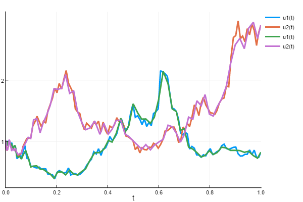

Noise Processes
Noise processes are essential in continuous stochastic modeling. The NoiseProcess types are distributionally-exact, meaning they are not solutions of stochastic differential equations and instead are directly generated according to their analytical distributions. These processes are used as the noise term in the SDE and RODE solvers. Additionally, the noise processes themselves can be simulated and solved using the DiffEq common interface (including the Monte Carlo interface).
This page first describes how to use noise processes in SDEs, and analyze/simulate them directly noise processes. Then it describes the standard noise processes which are available. Processes like WienerProcess, CorrelatedWienerProcess, GeometricBrownianMotionProcess, BrownianBridgeProcess and OrnsteinUhlenbeckProcess are pre-defined. Then it is shown how one can define the distributions for a new NoiseProcess.
In addition to the NoiseProcess type, more general AbstractNoiseProcesses are defined. The NoiseGrid allows you to define a noise process from a set of pre-calculated points (the "normal" way). The NoiseApproximation allows you to define a new noise process as the solution to some stochastic differential equation. While these methods are only approximate, they are more general and allow the user to easily define their own colored noise to use in simulations.
The NoiseWrapper allows one to wrap a NoiseProcess from a previous simulation to re-use it in a new simulation in a way that follows the same stochastic trajectory (even if different points are hit, for example solving with a smaller dt) in a distributionally-exact manner. It is demonstrated how the NoiseWrapper can be used to wrap the NoiseProcess of one SDE/RODE solution in order to re-use the same noise process in another simulation.
Lastly, the NoiseFunction allows you to use any function of time as the noise process. Together, this functionality allows you to define any colored noise process and use this efficiently and accurately in your simulations.
Using Noise Processes
Passing a Noise Process to a Problem Type
AbstractNoiseProcesses can be passed directly to the problem types to replace the standard Wiener process (Brownian motion) with your choice of noise. To do this, simply construct the noise and pass it to the noise keyword argument:
μ = 1.0
σ = 2.0
W = GeometricBrownianMotionProcess(μ,σ,0.0,1.0,1.0)
# ...
# Define f,g,u0,tspan for a SDEProblem
# ...
prob = SDEProblem(f,g,u0,tspan,noise=W)Basic Interface
The NoiseProcess acts like a DiffEq solution. For some noise process W, you can get its ith timepoint like W[i] and the associated time W.t[i]. If the NoiseProcess has a bridging distribution defined, it can be interpolated to arbitrary time points using W(t). Note that every interpolated value is saved to the NoiseProcess so that way it can stay distributionally correct. A plot recipe is provided which plots the timeseries.
Direct Simulation of the Noise Process
Since the NoiseProcess types are distribution-exact and do not require the stochastic differential equation solvers, many times one would like to directly simulate trajectories from these proecesses. The NoiseProcess has a NoiseProcessProblem type:
NoiseProblem(noise,tspan)for which solve works. For example, we can simulate a distributionally-exact Geometric Brownian Motion solution by:
μ = 1.0
σ = 2.0
W = GeometricBrownianMotionProcess(μ,σ,0.0,1.0,1.0)
prob = NoiseProblem(W,(0.0,1.0))
sol = solve(prob;dt=0.1)solve requires the dt is given, the solution it returns is a NoiseProcess which has stepped through the timespan. Because this follows the common interface, all of the normal functionality works. For example, we can use the Monte Carlo functionality as follows:
monte_prob = MonteCarloProblem(prob)
sol = solve(monte_prob;dt=0.1,num_monte=100)simulates 100 Geometric Brownian Motions.
Direct Interface
Most of the time, a NoiseProcess is received from the solution of a stochastic or random differential equation, in which case sol.W gives the NoiseProcess and it is already defined along some timeseries. In other cases, NoiseProcess types are directly simulated (see below). However, NoiseProcess types can also be directly acted on. The basic functionality is given by calculate_step! to calculate a future time point, and accept_step! to accept the step. If steps are rejected, the Rejection Sampling with Memory algorithm is applied to keep the solution distributionally exact. This kind of stepping is done via:
W = WienerProcess(0.0,1.0,1.0)
dt = 0.1
W.dt = dt
setup_next_step!(W)
for i in 1:10
accept_step!(W,dt)
endNoise Process Types
This section describes the available NoiseProcess types. Note that all keyword arguments are splatted into the NoiseProcess constructor, and thus options like reset are available on the pre-built processes.
Wiener Process
The WienerProcess, also known as Brownian motion, or the noise in the Langevin equation, is the stationary process with white noise increments and a distribution N(0,t). The constructor is:
WienerProcess(t0,W0,Z0=nothing;kwargs...)
WienerProcess!(t0,W0,Z0=nothing;kwargs...)Real Wiener Process
The RealWienerProcess is a Brownian motion that is forced to be real-valued. While the normal WienerProcess becomes complex valued if W0 is complex, this verion is real valued for when you want to, for example, solve an SDE defined by complex numbers where the noise is in the reals.
RealWienerProcess(t0,W0,Z0=nothing;kwargs...)
RealWienerProcess!(t0,W0,Z0=nothing;kwargs...)Correlated Noise
One can define a CorrelatedWienerProcess which is a Wiener process with correlations between the Wiener processes. The constructor is:
CorrelatedWienerProcess(Γ,t0,W0,Z0=nothing;kwargs...)
CorrelatedWienerProcess!(Γ,t0,W0,Z0=nothing;kwargs...)where Γ is the constant covariance matrix.
Geometric Brownian Motion
A GeometricBrownianMotion process is a Wiener process with constant drift μ and constant diffusion σ. I.e. this is the solution of the stochastic differential equation
The GeometricBrownianMotionProcess is distribution exact (meaning, not a numerical solution of the stochastic differential equation, and instead follows the exact distribution properties). It can be back interpolated exactly as well. The constructor is:
GeometricBrownianMotionProcess(μ,σ,t0,W0,Z0=nothing;kwargs...)
GeometricBrownianMotionProcess!(μ,σ,t0,W0,Z0=nothing;kwargs...)Brownian Bridge
A BrownianBridge process is a Wiener process with a pre-defined start and end value. This process is distribution exact and back be back interpolated exactly as well. The constructor is:
BrownianBridge(t0,tend,W0,Wend,Z0=nothing,Zend=nothing;kwargs...)
BrownianBridge!(t0,tend,W0,Wend,Z0=nothing,Zend=nothing;kwargs...)where W(t0)=W₀, W(tend)=Wend, and likewise for the Z process if defined.
Ornstein-Uhlenbeck
One can define a Ornstein-Uhlenbeck process which is a Wiener process defined by the stochastic differential equation
The OrnsteinUhlenbeckProcess is distribution exact (meaning, not a numerical solution of the stochastic differential equation, and instead follows the exact distribution properties). The constructor is:
OrnsteinUhlenbeckProcess(Θ,μ,σ,t0,W0,Z0=nothing;kwargs...)
OrnsteinUhlenbeckProcess!(Θ,μ,σ,t0,W0,Z0=nothing;kwargs...)Direct Construction of a NoiseProcess
A NoiseProcess is a type defined as
NoiseProcess(t0,W0,Z0,dist,bridge;
iip=DiffEqBase.isinplace(dist,3),
rswm = RSWM(),save_everystep=true,
rng = Xorshifts.Xoroshiro128Plus(rand(UInt64)),
reset = true, reseed = true)t0is the first timepointW0is the first value of the process.Z0is the first value of the psudo-process. This is necessary for higher order algorithms. If it's not needed, set tonothing.distthe distribution for the steps over time.bridgethe bridging distribution. Optional, but required for adaptivity and interpolating at new values.save_everystepwhether to save every step of the Brownian timeseries.rngthe local RNG used for generating the random numbers.resetwhether to reset the process with each solve.reseedwhether to reseed the process with each solve.
The signature for the dist is
dist!(rand_vec,W,dt,rng)for inplace functions, and
rand_vec = dist(W,dt,rng)otherwise. The signature for bridge is
bridge!(rand_vec,W,W0,Wh,q,h,rng)and the out of place syntax is
rand_vec = bridge!(W,W0,Wh,q,h,rng)Here, W is the noise process, W0 is the left side of the current interval, Wh is the right side of the current interval, h is the interval length, and q is the proportion from the left where the interpolation is occuring.
Direct Construction Example
The easiest way to show how to directly construct a NoiseProcess is by example. Here we will show how to directly construct a NoiseProcess which generates Gaussian white noise.
This is the noise process which uses randn!. A special dispatch is added for complex numbers for (randn()+im*randn())/sqrt(2). This function is DiffEqBase.wiener_randn (or with ! respectively).
The first function that must be defined is the noise distribution. This is how to generate $W(t+dt)$ given that we know $W(x)$ for $x∈[t₀,t]$. For Gaussian white noise, we know that
for $W(0)=0$ which defines the stepping distribution. Thus its noise distribution function is:
@inline function WHITE_NOISE_DIST(W,dt,rng)
if typeof(W.dW) <: AbstractArray && !(typeof(W.dW) <: SArray)
return @fastmath sqrt(abs(dt))*wiener_randn(rng,W.dW)
else
return @fastmath sqrt(abs(dt))*wiener_randn(rng,typeof(W.dW))
end
endfor the out of place versions, and for the inplace versions
function INPLACE_WHITE_NOISE_DIST(rand_vec,W,dt,rng)
wiener_randn!(rng,rand_vec)
sqrtabsdt = @fastmath sqrt(abs(dt))
@. rand_vec *= sqrtabsdt
endOptionally, we can provide a bridging distribution. This is the distribution of $W(qh)$ for $q∈[0,1]$ given that we know $W(0)=0$ and $W(h)=Wₕ$. For Brownian motion, this is known as the Brownian Bridge, and is well known to have the distribution:
Thus we have the out-of-place and in-place versions as:
function WHITE_NOISE_BRIDGE(W,W0,Wh,q,h,rng)
if typeof(W.dW) <: AbstractArray
return @fastmath sqrt((1-q)*q*abs(h))*wiener_randn(rng,W.dW)+q*Wh
else
return @fastmath sqrt((1-q)*q*abs(h))*wiener_randn(rng,typeof(W.dW))+q*Wh
end
end
function INPLACE_WHITE_NOISE_BRIDGE(rand_vec,W,W0,Wh,q,h,rng)
wiener_randn!(rng,rand_vec)
#rand_vec .= sqrt((1.-q).*q.*abs(h)).*rand_vec.+q.*Wh
sqrtcoeff = @fastmath sqrt((1-q)*q*abs(h))
@. rand_vec = sqrtcoeff*rand_vec+q*Wh
endThese functions are then placed in a noise process:
NoiseProcess(t0,W0,Z0,WHITE_NOISE_DIST,WHITE_NOISE_BRIDGE;kwargs)
NoiseProcess(t0,W0,Z0,INPLACE_WHITE_NOISE_DIST,INPLACE_WHITE_NOISE_BRIDGE;kwargs)Notice that we can optionally provide an alternative adaptive algorithm for the timestepping rejections. RSWM() defaults to the Rejection Sampling with Memory 3 algorithm (RSwM3).
Note that the standard constructors are simply:
WienerProcess(t0,W0,Z0=nothing) = NoiseProcess(t0,W0,Z0,WHITE_NOISE_DIST,WHITE_NOISE_BRIDGE;kwargs)
WienerProcess!(t0,W0,Z0=nothing) = NoiseProcess(t0,W0,Z0,INPLACE_WHITE_NOISE_DIST,INPLACE_WHITE_NOISE_BRIDGE;kwargs)These will generate a Wiener process, which can be stepped with step!(W,dt), and interpolated as W(t).
Non-Standard Noise Processes
In addition to the mathematically-defined noise processes above, there exists more generic functionality for building noise processes from other noise processes, from arbitrary functions, from arrays, and from approximations of stochastic differential equations.
NoiseWrapper
This produces a new noise process from an old one, which will use its interpolation to generate the noise. This allows you to re-use a previous noise process not just with the same timesteps, but also with new (adaptive) timesteps as well. Thus this is very good for doing Multi-level Monte Carlo schemes and strong convergence testing.
To wrap a noise process, simply use:
NoiseWrapper(W::NoiseProcess;reset=true)NoiseFunction
This allows you to use any arbitrary function W(t) as a NoiseProcess. This will use the function lazily, only caching values required to minimize function calls, but not store the entire noise array. This requires an initial time point t0 in the domain of W. A second function is needed if the desired SDE algorithm requires multiple processes.
NoiseFunction(t0,W,Z=nothing;noise_prototype=W(t0),reset=true)Additionally, one can use an in-place function W(out1,out2,t) for more efficient generation of the arrays for multi-dimensional processes. When the in-place version is used without a dispatch for the out-of-place version, the noise_prototype needs to be set.
NoiseGrid
A noise grid builds a noise process from arrays of points. For example, you can generate your desired noise process as an array W with timepoints t, and use the constructor:
NoiseGrid(t,W,Z=nothing;reset=true)to build the associated noise process. This process comes with a linear interpolation of the given points, and thus the grid does not have to match the grid of integration. Thus this can be used for adaptive solutions as well. However, one must make note that the fidelity of the noise process is linked to how fine the noise grid is determined: if the noise grid is sparse on points compared to the integration, then its distributional properties may be slightly perturbed by the linear interpolation. Thus its suggested that the grid size at least approximately match the number of time steps in the integration to ensure accuracy.
For a one-dimensional process, W should be an AbstractVector of Numbers. For multi-dimensional processes, W should be an AbstractVector of the noise_prototype.
NoiseApproximation
In many cases, one would like to define a noise process directly by a stochastic differential equation which does not have an analytical solution. Of course, this will not be distributionally-exact and how well the properties match depends on how well the differential equation is integrated, but in many cases this can be used as a good approximation when other methods are much more difficult.
A NoiseApproximation is defined by a DEIntegrator. The constructor for a NoiseApproximation is:
NoiseApproximation(source1::DEIntegrator,source2::Union{DEIntegrator,Nothing}=nothing;reset=true)The DEIntegrator should have a final time point of integration far enough such that it will not halt during the integration. For ease of use, you can use a final time point as Inf. Note that the time points do not have to match the time points of the future integration since the interpolant of the SDE solution will be used. Thus the limiting factor is error tolerance and not hitting specific points.
Examples Using Non-Standard Noise Processes
NoiseGrid
In this example, we will show you how to define your own version of Brownian motion using an array of pre-calculated points. In normal usage you should use WienerProcess instead since this will have distributionally-exact interpolations while the noise grid uses linear interpolations, but this is a nice example of the workflow.
To define a NoiseGrid you need to have a set of time points and a set of values for the process. Let's define a Brownian motion on (0.0,1.0) with a dt=0.001. To do this,
dt = 0.001
t = 0:dt:1
brownian_values = cumsum([0;[sqrt(dt)*randn() for i in 1:length(t)-1]])Now we build the NoiseGrid using these values:
W = NoiseGrid(t,brownian_values)We can then pass W as the noise argument of an SDEProblem to use it in an SDE.
NoiseWrapper Example
In this example, we will solve an SDE three times:
- First to generate a noise process
- Second with the same timesteps to show the values are the same
- Third with half-sized timsteps
First we will generate a noise process by solving an SDE:
using StochasticDiffEq, DiffEqBase, DiffEqNoiseProcess
f1(u, p, t) = 1.01u
g1(u, p, t) = 1.01u
dt = 1//2^(4)
prob1 = SDEProblem(f1,g1,1.0,(0.0,1.0))
sol1 = solve(prob1,EM(),dt=dt,save_noise = true)Now we wrap the noise into a NoiseWrapper and solve the same problem:
W2 = NoiseWrapper(sol1.W)
prob1 = SDEProblem(f1,g1,1.0,(0.0,1.0),noise=W2)
sol2 = solve(prob1,EM(),dt=dt)We can test
@test sol1.u ≈ sol2.uto see that the values are essentially equal. Now we can use the same process to solve the same trajectory with a smaller dt:
W3 = NoiseWrapper(sol1.W)
prob2 = SDEProblem(f1,g1,1.0,(0.0,1.0),noise=W3)
dt = 1//2^(5)
sol3 = solve(prob2,EM(),dt=dt)We can plot the results to see what this looks like:
using Plots
plot(sol1)
plot!(sol2)
plot!(sol3)
In this plot, sol2 covers up sol1 because they hit essentially the same values. You can see that sol3 its similar to the others, because it's using the same underlying noise process just sampled much finer.
To double check, we see that:
plot(sol1.W)
plot!(sol2.W)
plot!(sol3.W)
the coupled Wiener processes coincide at every other time point, and the intermediate timepoints were calculated according to a Brownian bridge.
Adaptive NoiseWrapper Example
Here we will show that the same noise can be used with the adaptive methods using the NoiseWrapper. SRI and SRIW1 use slightly different error estimators, and thus give slightly different stepping behavior. We can see how they solve the same 2D SDE differently by using the noise wrapper:
prob = SDEProblem(f1,g1,ones(2),(0.0,1.0))
sol4 = solve(prob,SRI(),abstol=1e-8, save_noise = true)
W2 = NoiseWrapper(sol4.W)
prob2 = SDEProblem(f1,g1,ones(2),(0.0,1.0),noise=W2)
sol5 = solve(prob2,SRIW1(),abstol=1e-8)
using Plots
plot(sol4)
plot!(sol5)
NoiseApproximation Example
In this example we will show how to use the NoiseApproximation in order to build our own Geometric Brownian Motion from its stochastic differential equation definition. In normal usage, you should use the GeometricBrownianMotionProcess instead since that is more efficient and distributionally-exact.
First, let's define the SDEProblem. Here will use a timespan (0.0,Inf) so that way the noise can be used over an indefinite integral.
const μ = 1.5
const σ = 1.2
f(u, p, t) = μ*u
g(u, p, t) = σ*u
prob = SDEProblem(f,g,1.0,(0.0,Inf))Now we build the noise process by building the integrator and sending that integrator to the NoiseApproximation constructor:
integrator = init(prob,SRIW1())
W = NoiseApproximation(integrator)We can use this noise process like any other noise process. For example, we can now build a geometric Brownian motion whose noise process is colored noise that itself is a geometric Brownian motion:
prob = SDEProblem(f,g,1.0,(0.0,Inf),noise=W)The possibilities are endless.
NoiseFunction Example
The NoiseFunction is pretty simple: pass a function. As a silly example, we can use exp as a noise process by doing:
f(t) = exp(t)
W = NoiseFunction(0.0,f)If it's multi-dimensional and an in-place function is used, the noise_prototype must be given. For example:
f(out,t) = (out.=exp(t))
W = NoiseFunction(0.0,f,noise_prototype=rand(4))This allows you to put arbitrarily weird noise into SDEs and RODEs. Have fun.